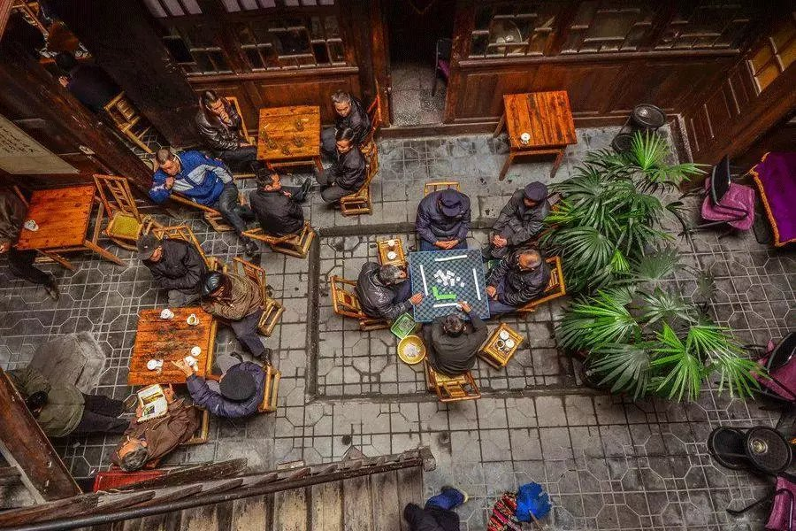
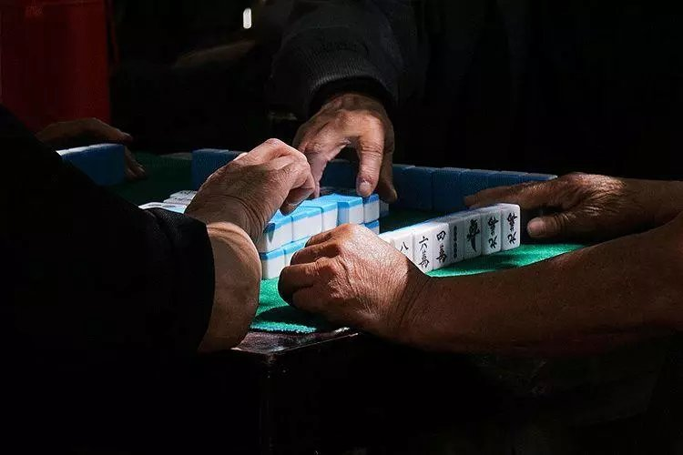
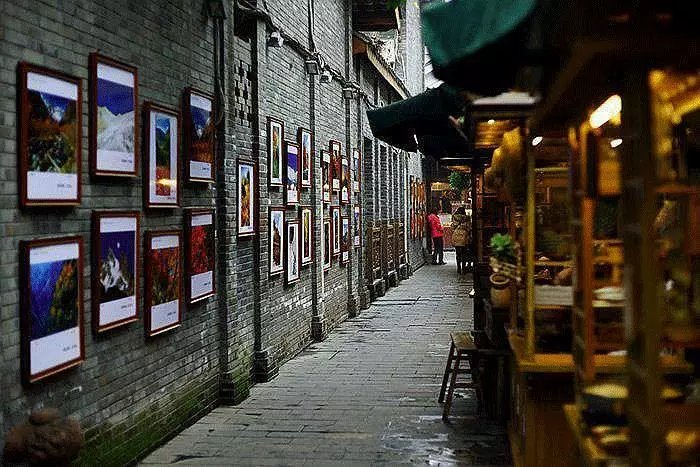
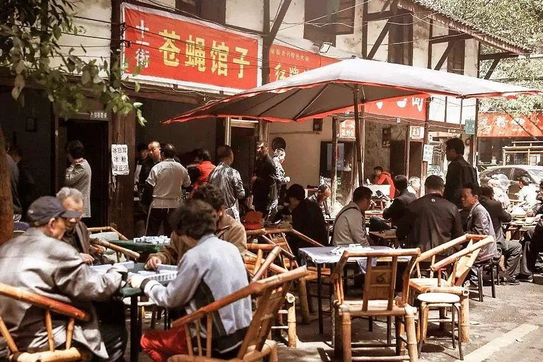
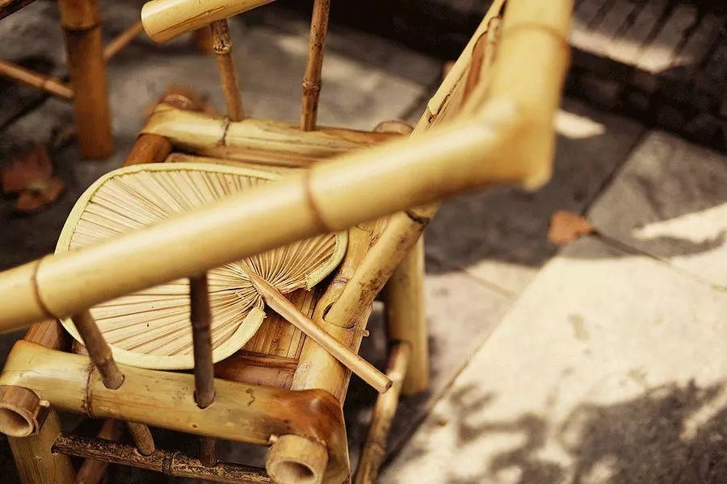

饭可以不吃，牌不得不打。
坐飞机的时候，看到下面是一片黑云，就到北京了；看到高楼快把飞机戳下来，就到上海了；当你啥也没看见，先听到麻将声，得，成都到了。
 对于打麻将，成都人是真正热爱到骨子里的。

只要有人一起打，大小都不计较。一局上万的，也有人敢上，几块钱打一下午的，也没谁嫌弃。反正重在参与，能开台就是好事。在成都，随便走到哪个旮旮角角，都能听到搓麻将的声音：结婚摆喜酒的在打，生娃儿请客的在打，过大寿的在打，办白事的还在打……当然，闲来无事更要多打几圈了。
麻将桌一支开，别的事就得统统靠边。有一次我在成都的商店买东西，四顾无人，只好扯着嗓子喊：“老板，再不出来我们把店都搬走了哦”，后面很快就传来急切的声音：“哎哟，你把钱放桌上压起就可以了咯”，话音未落，紧接着一阵稀里哗啦的麻将声——人还是没露面。
这事儿放在别的城市，可以当个笑话讲，但成都就再正常不过了。所以成都人一想到麻将，就不舍得出川，因为在别的任何地方，好像都没有这样的逍遥自在。
